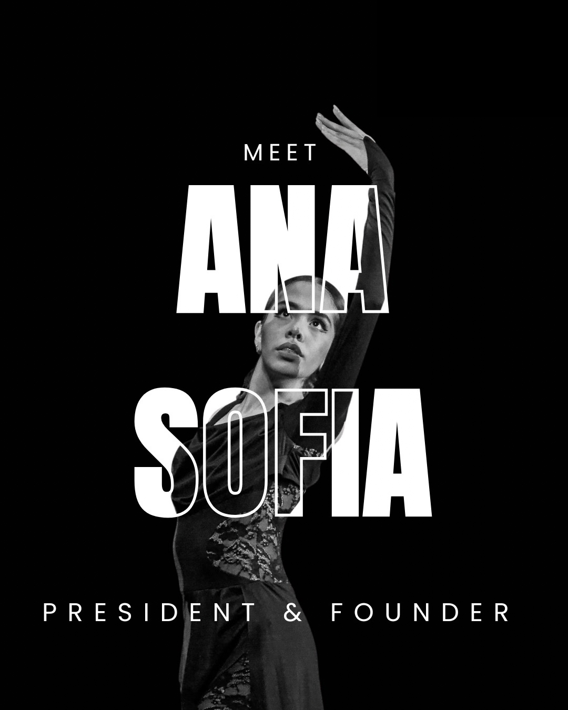

OUR FOUNDER
Ana Sofia Arceo Barajas
Hi, I'm Ana Sofi! Since I was a kid, I’ve dreamt of having my own dance academy, and although this is a little different, my vision and passion are the same. I created Project Balancē because dancers pour everything into the studio, but the industry rarely equips us to handle the emotional and physical toll outside of class. But we don't need to be left with quiet doubts, self-criticism, and injury stress with no solution.
I have spent all of Summer 2026 curating what I could call the almost perfect true home and safe place for your artistry and operations, for the world of dance that deserves support beyond the ordinary.
Support Project Balancē